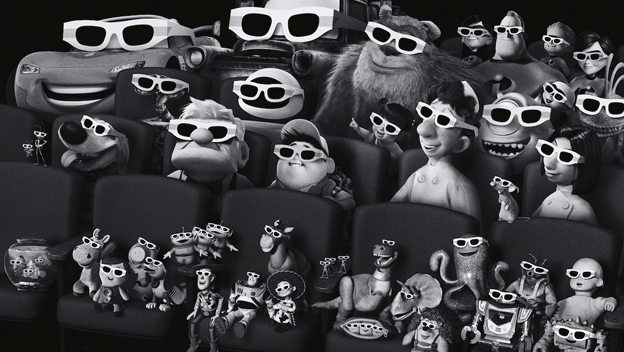

Cine de animación
 es una categoría de cine (o de una manera general, una categoría de arte visual o audiovisual) que se caracteriza por no recurrir a la técnica del rodaje de imágenes reales sino a una o más técnicas de animación. Las técnicas tradicionales de animación han sido durante mucho tiempo el dibujo animado (dibujos planos en dos dimensiones fotografiados imagen por imagen) o la animación en volumen (modelos reducidos o marionetas, también fotografiados imagen por imagen), aunque en tiempos más recientes también se recurre a la animación por computadora.
Tipos de animación
- Animación tradicional
- Rotoscopia
- Animación 3D
- Animación experimental
- Captura de movimiento